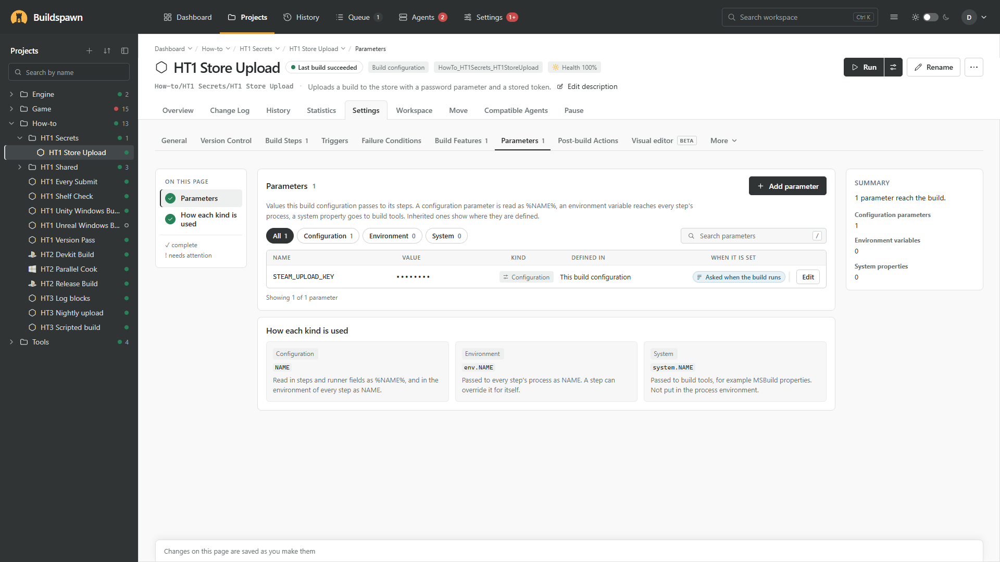
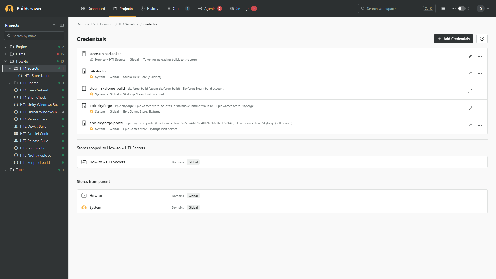
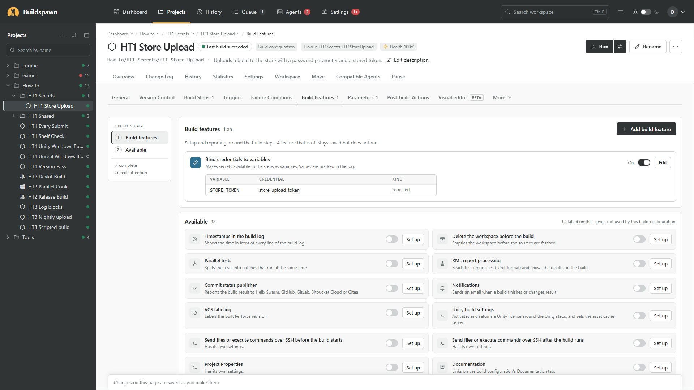
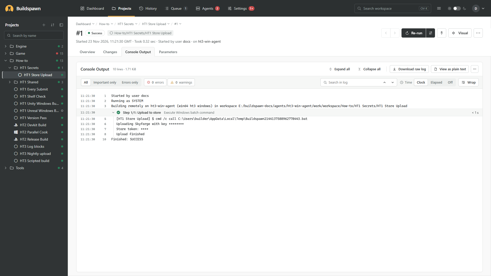

Use a secret in a build
Give a build a password, key or token without showing it in the settings or the build log.
There are three ways. Pick one:
| Way | Use it when |
|---|---|
| Password parameter | One build configuration needs the secret, and people may give another value for one build. |
| Credential | Several build configurations in a project share the secret, or a runner field asks for a credential. |
| Vault reference | Your studio keeps secrets in HashiCorp Vault and they must not be stored in Buildspawn at all. |
The example build configuration, HT1 Store Upload, uses the first two: a password parameter STEAM_UPLOAD_KEY and a stored token store-upload-token.
Before you start
- A build configuration you can configure.
- For a credential: permission to add credentials on the project.
- For Vault: a Vault server that both the Buildspawn server and the agents can reach, and a way to sign in to it (AppRole, LDAP or GCP IAM).
Steps
A password parameter
- Open the build configuration and go to Settings › Parameters.
- Click Add parameter.
- Type the name
STEAM_UPLOAD_KEY. - Set Value type to Password and type the value.
- Click Save. The table now shows dots instead of the value.

A credential shared by the project
- Open the project, here HT1 Secrets, and click the Credentials tab.
- Click Add Credentials. Choose Secret text, paste the token, type the ID
store-upload-tokenand a description. Click Create. - Open the build configuration and go to Settings › Build Features.
- Click Add build feature and pick Bind credentials to variables.
- Add a Secret text binding: the variable
STORE_TOKENand the credentialstore-upload-token. Save.


Read the secrets in a step
- Go to Settings › Build Steps and add a Command Line step, for example
Upload to store. - Read the secrets from the environment, never type them into the script:
In PowerShell use@echo off rem The secrets come from the environment, never from the script text. upload-tool --key "%STEAM_UPLOAD_KEY%" --token "%STORE_TOKEN%"$env:STEAM_UPLOAD_KEY; in a shell script use"$STEAM_UPLOAD_KEY". - Click Save, then Run.
A secret passed as a command-line argument can be seen by other programs on the agent while the step runs. If your tool can read the secret from an environment variable, let it do that.
A Vault reference
The docs server has no Vault server, so this part is described from the screens and not run end to end.
- Open the project's Settings and go to Connections. Click Add connection and choose HashiCorp Vault.
- Fill in the display name, the connection ID (for example
vault), the Vault URL and, if you use one, the namespace. Choose how to sign in, click Test connection, then Save. - On the build configuration, go to Settings › Parameters and click Add parameter. Name it
STEAM_UPLOAD_KEY. - Set Value type to Remote and Source to HashiCorp Vault. Pick the connection and type the query, a path and a key:
secret/data/skyforge/store!/upload_key - Click Test query, then Save. The value is fetched when the build starts and is never saved in Buildspawn.
You can also put a reference straight into the value of any parameter: %vault:secret/data/skyforge/store!/upload_key%.
Check it worked
Open the build's Console Output and click Expand all. Here the step printed the two secrets on purpose, to check them. Buildspawn replaced both values with stars.

In the Run dialog, the password parameter shows Concealed with a Change Password button. People can give another value for one build without seeing the stored one.
Troubleshooting
- The script gets the text
%STEAM_UPLOAD_KEY%, or nothing. Buildspawn never writes a secret into the text of a script. Read it from the environment as shown above. In a batch file%NAME%already does that. - The secret shows in the log. Masking hides the exact value only. If your tool changes it before printing, for example base64-encodes it, it can't be hidden. Don't print secrets.
- The credential is not offered. A credential on a project can only be used by build configurations inside that project. Move it up to a higher project, or to the server.
- The build stops with a Vault problem. The message names the query that failed. Check the path and key, and that the agent can reach Vault, not just the server.
Next steps
- Secrets and Vault: all the details.
- Global connections: a Vault connection for the whole server.
- Parameters.
- Share settings between build configurations: put shared secrets on the project.